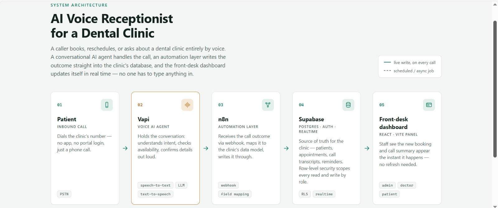

Pick who you are: this page rearranges itself for you in real time.✓ Page personalised for recruiters. Scroll down: education and CV come first.✓ Page personalised for clients. Scroll down: projects and reviews come first.✓ Page personalised for students. Scroll down: projects and skills come first.
n8n
Python
HubSpot API
Gemini
FastAPI
Supabase
Next.js
Airtable
Vapi
SQL
Docker
n8n
Python
HubSpot API
Gemini
FastAPI
Supabase
Next.js
Airtable
Vapi
SQL
Docker
About me
Hi, I'm Dorukhan.
MIS Student · AI & Workflow Automation Developer
I am a 4th-year Management Information Systems student at
İzmir Bakırçay University. Alongside my studies I work as a
freelance developer on Upwork, building workflow automations and CRM integrations
that save businesses hours of manual work.
My main tools are n8n, Python and the HubSpot API. I enjoy turning messy,
repetitive processes into clean pipelines: capturing data, removing duplicates, and adding
AI where it actually helps. I also lead an 11-person content team at our university's MIS club.
B.Sc. Management Information Systems (English-taught)
İzmir Bakırçay University
Studying how information systems support business: databases and SQL, programming,
ERP systems (Canias ERP), data analysis and web programming.
2026 – Present
Freelance AI & Automation Developer
Upwork
Rebuilt a Python + Gemini desktop tool for a UAE consultancy that turns Excel BOQ files into
Arabic work orders; batch mode handles 30 work orders in about 25 seconds.
Standardised site-location data across 329 employee records with zero unrecognised entries.
Designed OpenAPI 3.0 specifications to connect these tools to the client's ERP and HRMS.
2025 – Present
Content Coordinator & Team Lead
Bakırçay MIS Student Club
Lead an 11-person content team, assigning tasks and managing the content calendar.
Plan weekly guest-speaker events and Speaking Club sessions.
Sep 2025 – Present
Youth Programme Participant
İŞKUR · Department of Administrative and Financial Affairs
Tracking administrative processes and improving operational efficiency at the university.
Field / Operations Staff
Migros · Gabra Tekstil
Stock tracking, customer relations and teamwork in a corporate environment.
Skills
What I work with
I focus on three areas, backed by the tools and languages listed below.
01
Workflow Automation
CRM data automation and advanced workflow logic built on n8n and webhooks, so teams stop doing by hand what a pipeline can do.
02
Integrations & APIs
Python scripting and custom API development, with deduplication and syncing so data moves cleanly between tools.
03
Data Extraction & AI
Web scraping (Selenium, BeautifulSoup) paired with LLM-based parsing that turns messy raw data into structured input.
Programming & data
Python
SQL
Stored Procedures
PostgreSQL
MongoDB
OOP
Pandas
HTML & CSS
AI & automation
n8n
Gemini API
Prompt Engineering
AI Agents
Voice AI (Vapi)
NLP
Webhooks
Web & integration
REST APIs
FastAPI
Next.js
TypeScript
Supabase
Docker
HubSpot API
Airtable
Languages & management
Turkish (native)
English (B2+)
Team Leadership
Project Management
Canias ERP
Figma
Projects
Selected projects
Automation and AI systems I designed and built end to end. Each card opens a detailed case study with screenshots.

AI & Automation
AI Voice Receptionist
An AI voice agent that answers a dental clinic's phone, books and reschedules appointments by conversation, and syncs live to a staff dashboard.
A Python microservice fuzzy-matches incoming companies against HubSpot; n8n turns the score into a decision: auto-merge, flag for review, or create new.
"Dorukhan has always delivered before the deadline. Speed & quality is his forte!! I can confidently say that he is a rising talent on Upwork."
Upwork client · Data Extraction, Translation & Appending
★★★★★
"Dorukhan delivered the product way above our expectations. He was open for numerous iterations till we were satisfied with the outcome."
Upwork client · Data Extraction
★★★★★
"The task was very clear and the response was quick; I would love to work with them again."
Upwork client · Technical Prompt Validation
AI Assistant
Ask my AI assistant
Have a project in mind? Describe it to my assistant. It asks a few questions about what you need
and sends me a short summary, so I can reply with a concrete plan.
Download my CV
A one-page summary of my education, experience, projects and skills (PDF).